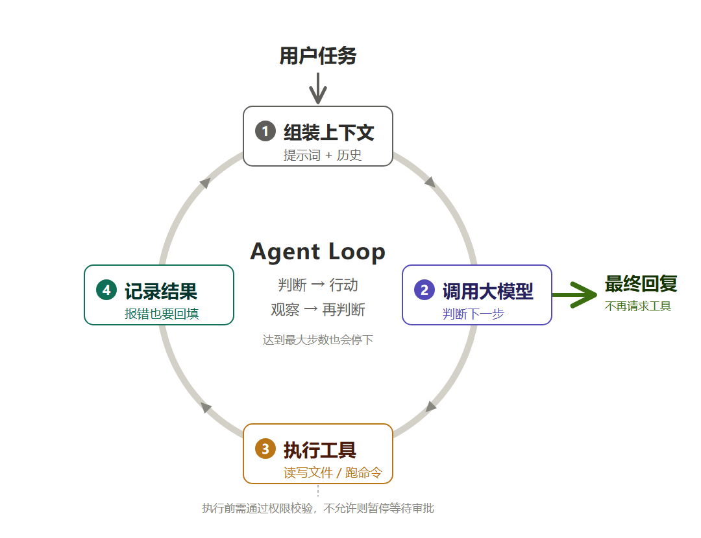

给大模型装上眼睛和手脚：一个 AI 智能体 是怎样工作的？
在上一篇《AI 不只是聊天：从回答问题到自己干活，四个等级智能划分》中，我们讨论了 AI 应用的一个重要变化：大模型不再只是被程序调用来回答问题，还开始决定下一步要做什么，甚至参与完成整个任务。
但一个新的问题随之而来：大模型明明主要是在生成文字，为什么接上一个智能体就能给人干活了呢，从编程、写文档、做数据分析、做PPT、剪辑视频
要回答这个问题，可以先从一颗大脑说起。
一、一颗大脑，和一副身体
大模型像一颗大脑：他有海量的知识和强大的思考推理能力，却没有感官也没有四肢。它读过大量文本，你问它“这个代码为什么写的不对”，它能列出十种可能的原因—，然后什么也做不了，因为它既看不见你的文件，也跑不了你的命令。
给它接上五官，让它能读文件、查网页、看报错日志；接上手脚，让它能写文件、跑命令；再有一根神经，把每一步的结果传回大脑，让它据此重新判断下一步。有了这一整套流程，它才从“能出主意”变成“能把事办成”——这才叫智能体。
二、一个智能体，最基本由什么组成？
我们先不谈多智能体、长期记忆、复杂工作流。一个最小的工具型智能体，可以先理解为五个部分。
| 核心部分 | 通俗理解 | 在程序里负责什么 |
|---|---|---|
| 大模型（LLM） | 思考与判断 | 理解任务，决定回答还是请求调用工具 |
| 工具（Tools） | 观察与行动的接口 | 查询信息、读取文件、写文件、执行命令 |
| 上下文（Context） | 当前工作的记录 | 保存用户要求、之前的回复、工具执行结果 |
| 执行循环（Agent Loop） | 不断推进工作的机制 | 调用模型、执行工具、回填结果、决定继续或停止 |
这里需要特别解释“眼睛”和“手脚”：它们往往都是工具，只是用途不同。
例如，read_file 读取文件，像是让 Agent 看见电脑里的内容；write_file 修改文件，像是让 Agent 动手；run_command 则能够让它通过命令完成更丰富的操作。对于智能体，所谓“感知”，通常并不是摄像头，而是文件内容、网页、数据库查询结果、程序报错等数字信息。
需要注意，大模型并不是直接操纵电脑。它通常是输出一份工具调用请求，例如“读取 上半年销售.xlsx”；真正执行文件读取操作的，是智能体程序。
三、Agent 的秘密，不只是有工具，而是有一个循环
假设我们对一个智能体说：
“帮我查一下公司上半年的主要产品线销售情况，整理成一份半年度经营汇报初稿，放到
半年度汇报.xlsx里。”
它可能这样工作。
第一轮：先找料。 模型不知道自己手上有什么材料，于是请求列出工作目录。智能体内部的工具返回目录内容，模型看到里面有几个 Excel 和一份去年的汇报文档。
第二轮：再读。 模型请求读取“上半年销售.xlsx”，程序把表格内容取出来返回。模型读后发现：只有两条产品线的数据完整，第三条线缺 5 月和 6 月——直接写下去，汇报就是错的。
第三轮：补信息，或者主动问你。 模型先去翻去年的汇报，看第三条线往年是什么口径；如果仍然对不上，它会停下来问你一句：“产品线 C 的 5–6 月数据没找到，您补一份给我？”
第四轮：动笔。 你告诉他产品线 C 的 5-6 月数据在哪里，信息齐了，模型生成汇报初稿，请求写入 半年度汇报.pptx。程序保存，并返回“写入成功”。
最后：复核。 模型对照前面的数据检查一遍，把“数据来源”和“待补充项”一并写进文末，然后告诉用户：初稿已完成，有两处需要你确认。
整个过程不是模型在一次回答中“凭空把文件变出来”，而是多次执行一个基本循环：

这就是 Agent Loop（智能体执行循环）：判断 → 行动 → 观察结果 → 再判断。 你电脑上运行的各种智能体，从简单的任务到运行几个小时的大型编程任务，最核心的工作原来就是这套执行循环来完成。
工具让大模型有机会接触外部世界；循环则让它能够依据每一步的新信息继续做事。
上面这个例子看着顺，其实每一步都可能是错的。第一轮列目录时可能一片空白；读 Excel 时可能发现文件加了密码；写入时可能因为文件正被编辑而失败。这些都不是“模型变笨了”，而是它拿到了一个具体的错误，然后据此换了下一步。
它不是一次就猜对，而是错了之后还能根据现场环境自我纠正。 循环真正的价值在这里，而不是在“一次做对”的那条路径上。
当然，实际 Agent 还要限制最大执行步数、处理失败、控制费用，不能任由模型无限循环。
四、几十行核心逻辑，就能看懂一个最小 Agent
如果你懂一点编程，下面这段示意性伪代码，几乎可以概括工具型 Agent 的基本工作方式：
messages = ['用户的输入任务']
for step in range(MAX_STEPS):
# 调用大模型的API
response = call_llm(messages, available_tools)
messages.append(response)
if response.has_tool_calls: # 大模型判断要调用工具获取信息
for tool_call in response.tool_calls:
# 执行工具调用
result = execute_tool_safely(tool_call)
# 工具调用结果信息追加到下一轮大模型API调用的输入
messages.append(tool_result_message(tool_call, result))
else:
# 总结任务 保存任务修改结果 返回最终任务汇报
return response.final_answer
return "任务已达到执行步数限制"
代码不长，重要的是理解分工：模型决定是否请求工具；程序负责执行；工具返回结果；结果进入下一轮模型调用。
注意 execute_tool_safely 这一行的返回值——失败也要原样塞回 messages。新手常犯的错是把错误吞掉或者直接打印给用户，那样循环就断在这里了。真正的工程实现还需要参数校验、异常处理、权限控制等机制。
为了让这套原理不只停留在纸面上，我做了一个循序渐进的教学项目：mini-agent。
它的 v01_agent.py 从最小 Agent 入手，提供文件读取、文件写入和命令执行等基础工具，供读者观察“模型请求工具—程序执行—结果回填—继续判断”的过程。可以先从这个版本开始，而不用一上来阅读复杂的 Agent 框架。
配图占位 3｜mini-agent 运行截图 截取一次真实终端演示，展示 User 输入、模型选择工具、工具返回结果、最终回答。截图必须来自实际运行，避免把预期表现写成已经发生的结果。
五、能动手，还不等于能可靠地办事
拥有眼睛和手脚，只说明 Agent 开始具备执行能力；要完成更复杂的任务，还需要更可靠的工作方式。
拿改代码来试，问题会明显变多：找错文件、改了不该改的地方、改对了却忘了跑测试、测试跑了但没看懂失败原因又凭感觉改了一遍。没有相应机制的话，Agent 就只能算“会动手”，谈不上“做得稳”。
因此，最小 Agent 之外，还可以逐步添加这些能力：
- 任务规划和进度跟踪能力
- 文件变更精确跟踪能力
- 结果验证能力，写好的代码是否能满足需求，文档风格前后是否一致
- 记忆能力，包括使用者的偏好习惯，特定项目的约定等
- 远程工具接入能力， 很多任务需要打通企业内部系统或外部系统读取数据，智能体执行完成任务之后，更新外部系统数据和文档
这些能力并不要求所有 Agent 都具备。一个只需查询天气的 Agent，可能根本不需要长期记忆和任务计划；而要修改代码、复杂的数据整理、制作工作汇报的PPT或处理企业业务的智能体，测试、审计、权限与恢复机制就一个都省不掉。
这里也可以呼应上一篇的四个等级划分：有工具调用能力，不等于天然达到最高自主性。 一个 Agent 能否自主规划、验证和修正完整任务，仍然取决于整个系统如何设计。
六、真正重要的，是形成一个可控的行动闭环
现在可以回答文章开头的问题了：
- 大模型 负责提供世界知识、理解任务、判断下一步；
- 工具 让它能够观察外部信息、执行实际操作；
- 上下文 让它知道当前任务已经发生了什么；
- 智能体循环 让判断、行动、反馈能够接续发生；
- 程序的权限与控制机制决定它可以做什么、什么时候应该停下来。
所以，一个智能体并不是“更大的大模型”，也不是“给聊天机器人增加几个按钮”。它是一套让大模型能够在授权范围内观察、判断、行动并获取反馈的软件系统。
如果只记住本文一句话，我希望是这一句：
大模型提供世界知识与思考，电脑上的智能体携带工具连接你的真实数字世界，执行循环让它能够持续推进任务。
接下来，我们就可以沿着 mini-agent 的实践路线，逐步理解任务计划、工具系统、上下文与记忆、验证，以及一个 Agent 如何从“能运行”走向“可靠可用”。
延伸阅读
- mini-agent — 从零实现一个智能体：本文对应的示例项目。